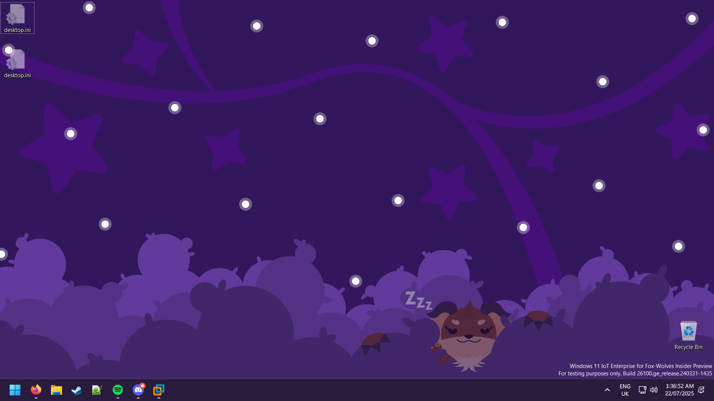
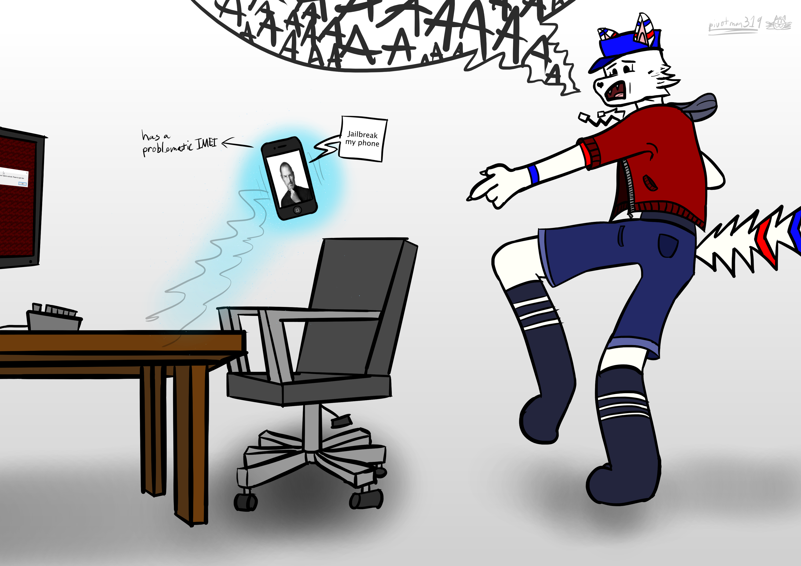

The Grand 2025 Recap (and other notes)
published 31/12/2025
I don't even know where to start with this. It's been Definitely A Year.
Some Much-Needed Explanation
Hi. Sorry for not being active on this part of the Internet lately. I was going to have much larger plans for this year but I ended up running into some stupidly bad roadblocks which really didn't help me at all. Some of the things I really wanted to do this year ended up falling through due to issues beyond my control, which I'll get to in a bit.
To get a couple of things straight: this year started out really poorly with me not having a functioning computer for an entire month. The previous main rig (which I call Ol' Betsy/"Athena") ended up having a motherboard failure in December 2024 (often failing to actually power up in most instances), and I had to get it repaired in January this year. Speaking of computers...
Deus Ex Machina
This section's gonna be quite long; it's basically a giant infodump on all the hardware upgrades I've dealt with this year.
I ended up donating Betsy over to my older brother, who happens to like Bethesda RPGs and strategy games a lot (he's a bit of a die-hard Fallout 4 + Skyrim nutjob, plus plays lots of Crusader Kings III with Game of Thrones mods slapped onto it). It's in good hands, although I do sometimes have to do some occasional maintenance towards it (dust cleanup and everything) to make sure it runs in tip-top shape.
The changes made to Ol' Betsy during the servicing process ended up with a motherboard replacement, a new 2 TB Kingston SATA3 SSD slapped onto it as the main OS drive (which is miles better than the old 256 GB WD Green doohickey it struggled with as time passed; it actually choked during larger Windows updates), a new 2560x1440px monitor, and a completely fresh reinstall of Windows 11 Pro with none of the weird bullshit thrown onto it.
As for me, I ended up getting a much-needed upgrade. So, meet Hermes, my new main PC:
Hermes, the new big guy. Would probably murder you in your sleep if you tried challenging it to a 1v1 TF2 MGE duel.
And, the current desktop setup (circa July 2025).
Thing's a doozy. It's also a much overdue upgrade over the previous machine (Betsy) which I'd mained for the past six years; I'd been intending on doing a big upgrade at some point, but the whole "hardware failure" thing kind of justified doing it much sooner than I originally intended. To run over the crucial details, it's got the following:
- Case: Corsair 4000D Airflow
- Motherboard: Asus Prime B650-Plus
- PSU: Corsair RM650 (80+ Gold)
- CPU: AMD Ryzen 7 9700X
- CPU Cooler: Be Quiet! Pure Rock 2 FX
- GPU: Gigabyte GeForce RTX 4060 (WindForce OC), 8 GB GDDR VRAM
- Memory: 32 GB (4x8 GB DDR5) Corsair Vengeance Black @ 4,800 MT/s, occupying DDR5 channels 1+2
- Main OS SSD: 1 TB Crucial P3 M.2-2280 NVMe
- Storage Drive: 8 TB Western Digital Red Pro WD8005FFBX @ 7,200 RPM
- OS: Windows 11 IoT Enterprise, v25H2
- Misc: Xbox Series Wireless Controller, Black (connected via USB-C cable)
Thought I'd drop this hallucination nonsense here: Half-Life 2 RTX actually runs at ~10-15 frames per second with DLSS Framegen off. Nova Prospekt ended up dropping to maybe ~5-16 FPS and created a blurry mess on a recent Nvidia GPU due to individually-modeled fence chainlinks located at one very specific corridor.
What a fucking joke.
As if being stared down by a crazy priest with no salvation in sight wasn't disturbing enough.
Oh no.
Something fun I noticed is that the motherboard I mentioned comes with added support for device lighting, so Windows just kind of straight-up offers native support for changing the look of my PC's fans out-of-box. Customization is a bit okay, but it works well enough for my kind of vibe.
As for the other hardware I got this year, I ended up getting a new replacement Lenovo ThinkPad E16 Gen 2 (which I dub "Epsilon"; featuring a Ryzen 5 7535U, 16 GB of DDR5-4800 RAM and 512 GB of NVMe storage) because HP apparently is unwilling to make functioning computers because they scam their customers by cheaping out on their bill of materials (BOM).
What a funny little guy.
I wish I was joking when I said that HP actually doesn't appear to be interested in making a PC that doesn't fall apart as soon as you come into contact with it.
Not buying another one of their shoddy products again.
In the few months I've used this laptop, I've noticed this is running a LOT better than the old one and clearly appears to have a much more superior build quality, so I'm pretty happy with the choice I've made here. I also got a new mid-range Samsung Galaxy A36 phone because the other main phone I have (a 2016 Galaxy J5) finally had its Google apps stop working completely. Oh, well. Onto the next part...
The Downs
I originally intended to cover some very specific versions of Windows in thorough detail this year, particularly the whole Windows Phone and dual-screen Andromeda OS debacle. I ended up having to shelve this to next year mainly because of the above-mentioned upgrades that I had to deal with throughout the entirety of this year, and also because of some other plans that ended up completely backfiring on my end.
If I'm lucky enough to get hold of a second Lumia 950 and a Microsoft Display Dock this time around (and maybe get hold of a Surface Duo if and only if the whole eBay pricing situation stops becoming completely ridiculous), I will eventually do a deep dive into the WP side of things. After all, dealing with one of Microsoft's failed ventures is something I've always been wanting to cover since forever, and it would be a waste not to document the development of both operating systems.
The Ups
There were some big one-ups this year, so not everything's really in vain. For one, I helped preserve some early Windows on ARM64 builds that included a primitive verison of the x86-to-ARMv8 JIT compiler. I also released Morpheus, a fancy new script that enables features bound to Windows 8's Redpill feature lockout system and its four lockdown tiers by relying on actual license files pulled from the Windows 8 Developer Preview - the one major upside to this is that it doesn't sacrifice Windows licensing, so activate your copy of some weird Win8 build all you want, so long as it's using prod-signed SPP policies.
Apologies to every Half-Life fan I've just upset with this diagram.
Windows-related stuff aside, I also helped thoroughly test and ship the Clustered forward renderer in Portal 2: Community Edition, which basically gets rid of the old, crusty method of lighting in the Source engine and replaces it with a real-time lighting system optimized for all kinds of systems; it's one doesn't rely on weird AMD or Nvidia raytracing crap.
Shiny!
A recent P2:CE update that released in November 2025 also includes a new UI design I helped work on:
Now we're thinking with UI.
It's still a work-in-progress; everything's sort of there, but requires some implementation on the engine side. I've been helping out with the localization side of things in shipping out a v2 of the new UI that's currently in the works. Here's a little treat:
Pardon the dust.
I've also been doing some code work by putting up some PRs for the TF2 SDK, notably including some new optional alt-fire behavior for citizens in Half-Life 2, sound fixes for melees in HL2, and VScript bindings for fire. I have also been working on refining my Source Filmmaker animation skills lately, and have been dabbling more into 2D art ever since I got my drawing tablet in October 2024:
Some of the SFM animations I've worked on (or am currently working on).
Some art I contributed for a good friend of mine. The blog post featuring this can be found here.
Wrap-Up
With all this out of the way, I think it's been a relatively okay-ish year for me.
For a quick TL;DR: rough start with non-functioning hardware quickly resolved by repairs and much-needed hardware replacements, followed by me preserving and documenting old Windows crap (as usual), in addition to helping ship a new lighting system and UI for a licensed Source engine mod. I opened up some PRs for the then-newly released TF2 SDK, and have been working on improving my art skills this year.
Notwithstanding all the other horrors that have happened in 2025, I'm hoping 2026 will be an objectively year overall.
Thanks for sticking around if you've read this far. Here's to another year passed, and see you in the big '26.